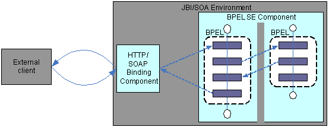
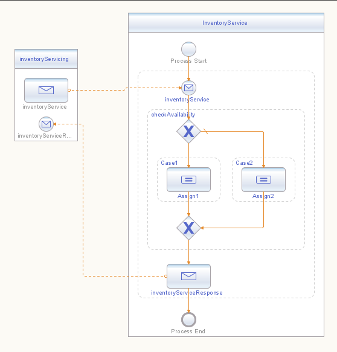
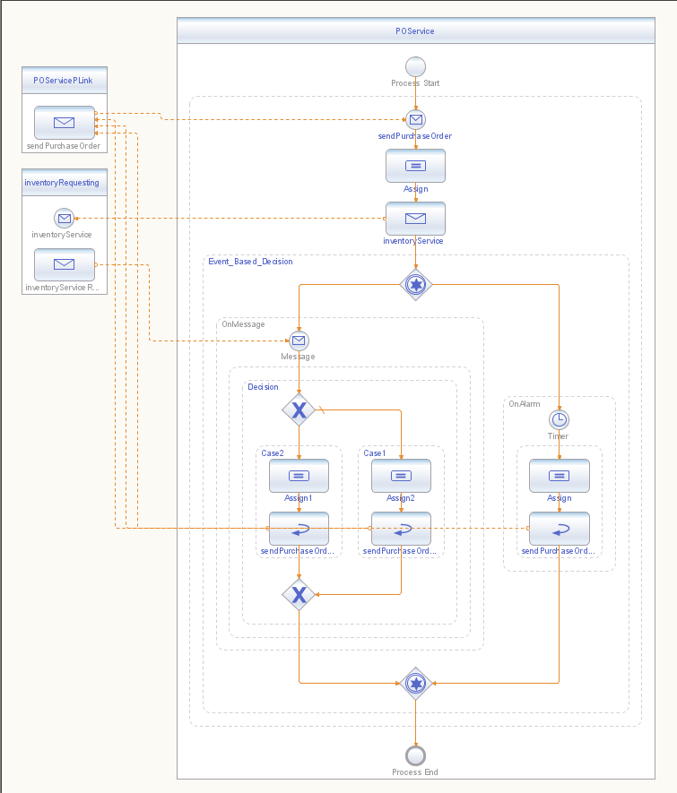

Kiran Bhumana, Ryan Kennedy, Shauna Pickett-Gordon
Supporting asynchronous interactions between web services can be a tedious task. Since many real-world business processes often perform long-lived operations in the course of their workflow, developers have had to implement complex synchronization requirements to support these types of interactions. The common usage pattern is to match the asynchronous response with the corresponding request that was sent earlier.
This document focuses on implementing asynchronous interactions between web services by leveraging key aspects of the Business Process Execution Language (BPEL).
Using BPEL to describe long-running business interactions between partner web services, a developer can more easily support the asynchronous characteristics of a business process.
This solution demonstrates the following aspects:
See BluePrint 1, Synchronous Web Services Interactions Using BPEL.
An asynchronous operation involves two in-only WSDL operations,
which together make a request-response combination. BPEL defines an invoke
activity to consume an in-only service. To enable provisioning of the
in-only service, BPEL defines the receive and pick-onMessage
constructs.
BPEL defines correlation constructs that declaratively
provide the matching capability. Also, WSDL extension elements propertyAlias
and property are used to define the correlation values.
Business processes are usually long-running, and the orchestration
of web services is primarily asynchronous. It is important to combine
the asynchronous consumption of services with timer-based constructs so
that a consumer of a web service doesn't wait indefinitely for a
response. The pick-onAlarm construct defined in BPEL
helps the developer achieve this functionality.
From defining relationships and specific roles between partner services, to handling the asynchronous response associated with a request, using BPEL to describe a business process alleviates the need to implement many of the complex synchronization requirements involved when supporting asynchronous interactions.
You'll need to consider certain design details when you use the Business Process Execution Language (BPEL) to describe the following:
Provisioning synchronous operations (also called request-response or in-out operations) involves receiving a message and replying with a message defined by the web service.
Provisioning and consuming asynchronous operations involves two
in-only WSDL operations: a request-response combination. BPEL defines
the invoke activity to consume an in-only operation, and
defines receive and pick-onMessage as
provisioning the in-only operation.
When designing a business process that incorporates asynchronous web service interactions, the following constructs are needed.
partnerLinks representing partner web servicesvariables that store data exchanged between web
servicesinvoke activity to consume a servicereceive activity to provide a servicepick-OnMessage construct to provide the service
for the asynchronous responsepick-OnAlarm construct to provide for the
alternative timer path The following solution shows how to create and use the BPEL artifacts to both provision and consume synchronous and asynchronous web service operations. First, an external client consumes a synchronous operation provided by a BPEL process. Then, this BPEL process consumes an asynchronous operation provided by another BPEL process. The solution is depicted here.

Figure 1: Asynchronous Message Exchanges in a BPEL Process
Two web services are involved here: a purchase order service, POService,
which is consumed by an external client through SOAP over HTTP; and an
inventory check service, InventoryService, consumed by
the BPEL process that provisions the purchase order service. Both POService
and InventoryService are implemented as BPEL services.
The business process that provisions the purchase order service,
upon receiving the request, checks with the inventory by calling InventoryService.
The business process that provisions the inventory check service
verifies whether the requested order is available and sends a status of
the inventory asynchronously. Based on the asynchronous status returned
by InventoryService, POService returns
either a fault or a valid response to the HTTP client.
Correlation is used to route the messages from InventoryService
to the proper executing instances of POService. The value
of orderID in the purchaseOrder message is
used as the correlation identifier.
A response that is sent back asynchronously to the requester must be routed to the correct business process instance. To make this match, BPEL uses unique, embedded correlation tokens within the application data (application-level routing), instead of enforcing additional routing information. The location and type of correlation tokens are statically declared in the business process. The developer must enforce unique constraints and make sure that, at execution, unique values are maintained for the life of the business process.
An instance of correlation in BPEL is defined on a property, and, in
turn, on a property alias. propertyAlias points to a
unique ID in the received message. See Important
Artifacts Defined in BPEL and WSDL for details.
Correlation tokens are defined in the BPEL process POservice.
A unique correlation ID is associated with every instance of POService
that is created in the execution environment. The correlation token is
initialized when the POService BPEL process invokes the inventoryService
process; the token is associated with the instance of POService.
The callback from inventoryService is received by the onMessage
branch of the pick activity. When the asynchronous inventoryStatus
message is received, BPEL uses xpath to evaluate the propertyAlias
defined on the inventoryStatus message, obtains the correlationSet
value, and routes the message to the appropriate instance of the
business process.
Provisioning asynchronous operations requires a timer-based alternative execution path. If the inventory status is not received within a specified period of time, the purchase order service goes ahead with its timer execution path, and returns a fault to its consumer. Here are some possible reasons for a callback's failure:
These failures can't be propagated to a POService
process instance that is waiting for a callback from the inventoryService
BPEL process instance: Hence, the necessity of a timer-based path.
After a timeout in the POService process, if messages
messages with the old correlation token ID arrive from the inventory
service, these late messages are not consumed by the POService
process instance, and a fault is sent to the consumer of the
service--that is, the inventoryService process.
The InventoryService WSDL file defines a partnerLinkType
with two roles: inventoryService and inventoryServiceRequester.
inventoryService role refers to the inventoryService
operation through the portType called inventoryPortType.
inventoryServiceRequester role refers to the inventoryServiceResponse
operation through inventoryServiceCallbackPortType. The inventoryService operation expects a purchaseOrder
message, and inventoryServiceResponse expects an InventoryMessage.
<plink:partnerLinkType name="inventoryRequestingLT">
<plink:role portType=tns:"inventoryPortType"
name="inventoryService"></plink:role>
<plink:role portType="tns:inventoryServiceCallbackPortType"
name="inventoryServiceRequester"></plink:role>
</plink:partnerLinkType>
<portType name="inventoryPortType">
<operation name="inventoryService">
<input name="purchaseOrder"
message="tns:POMessage"></input>
</operation>
</portType>
<portType name="inventoryServiceCallbackPortType">
<operation name="inventoryServiceResponse">
<input name="inventoryResponse"
message="tns:InventoryMessage"></input>
</operation>
</portType>
The POService BPEL process defines a partnerLink
called
inventoryRequesting. This partnerlink's role is to consume
the service inventoryService. Its partner's role is to
consume the service inventoryServiceResponse.
<partnerLink name="inventoryRequesting"
partnerLinkType="invs:inventoryRequestingLT"
myRole="inventoryServiceRequester"
partnerRole="inventoryService"/>
On the other hand, the inventoryService BPEL process
defines a partnerLink called inventoryServicing
, whose role is to provide the service inventoryService.
Its partner's role is to provide inventoryServiceResponse.
<partnerLink name="inventoryServicing"
partnerLinkType="invs:inventoryRequestingLT"
myRole="inventoryService"
partnerRole="inventoryServiceRequester"/>
The inventoryService WSDL file declares the properties
orderID and propertyAlias on POMessage
and InventoryMessage, which are defined, respectively, on
the operations inventoryService and inventoryServiceResponse.
The value of orderID is designed to be of xsd:int
value. Property is an abstract concept, while propertyAlias
is the corresponding concrete aspect. The property aliases tie the
property to a value defined in the web service message using an xpath
query or a similar technology. This much-needed indirection decouples
the abstract from the concrete.
<bpws:property name="orderID"
type="xsd:int"/>
<bpws:propertyAlias propertyName="tns:orderID"
messageType="tns:POMessage"
part="purchaseOrder">
<bpws:query>/purchaseOrder/orderId</bpws:query>
</bpws:propertyAlias>
<bpws:propertyAlias propertyName="tns:orderID"
messageType="tns:InventoryMessage"
part="inventoryPart">
<bpws:query>/inventory/orderId</bpws:query>
</bpws:propertyAlias>
The POService process defines a correlation set on
this property.
<correlationSets>
<correlationSet name="POCorrelationSet"
properties="invs:orderID"/>
</correlationSets>
The POService process uses a one-way invoke
operation--signaled by the fact that there is no outputVariable
for this invoke activity. Correlation is also initialized here, and
when the invoke is executed, a unique ID is associated
with the POService process instance.
<invoke name="inventoryService"
partnerLink="inventoryRequesting"
portType="invs:inventoryPortType"
operation="inventoryService"
inputVariable="inventoryServiceRequest">
<correlations>
<correlation set="POCorrelationSet"
initiate="yes"/>
</correlations>
</invoke>
POService also defines a pick activity.
This activity has an OnMessage branch to consume the
asynchronous response from the inventory, and it has an onAlarm
to fall back in some unforeseen conditions.
<onMessage partnerLink="inventoryRequesting"
portType="invs:inventoryServiceCallbackPortType"
operation="inventoryServiceResponse"
variable="inventoryServiceReply">
<correlations>
<correlation set="POCorrelationSet"
initiate="no"/>
</correlations>
</onMessage>
<onAlarm>
<for>'P0Y0DT300S'</for>
</onAlarm>
Notice the usage of the correlation on onMessage. The
initiate value gives a hint either to associate the correlation ID with
the instance, or that a message with the correlation ID should be
routed to the instance. In this situation, when a message arrives that
is to be consumed by the pick-onMessageconstruct, the
message needs to be routed to the appropriate POService
process instance.
The inventoryService BPEL process uses a receive
activity construct to provide a one-way inventory service. It uses a
one-way invoke for the call-back functionality, and sends
the inventoryService response to the POService.
<receive name="inventoryService"
partnerLink="inventoryServicing"
portType="invs:inventoryPortType"
operation="inventoryService"
variable="inventoryServiceVar"
createInstance="yes">
</receive>
<invoke name="inventoryServiceResponse"
partnerLink="inventoryServicing"
portType="invs:inventoryServiceCallbackPortType"
operation="inventoryServiceResponse"
inputVariable="inventoryServiceResponseVar">
</invoke>
The visual form of the InventoryService BPEL process
is shown next. For implementation details,
see the source
files.

Figure 2: The InventoryService BPEL Process
The POService BPEL process is illustrated below.

Figure 3: The POService BPEL Process
The code for purchaseorder.schema is as
follows.
<?xml version="1.0" encoding="UTF-8"?>
<xs:schema xmlns:xs="http://www.w3.org/2001/XMLSchema"
targetNamespace="http://manufacturing.org/xsd/purchase"
xmlns:tns ="http://manufacturing.org/xsd/purchase"
elementFormDefault="qualified" attributeFormDefault="unqualified">
<xs:element name="purchaseOrder" type="tns:purchaseOrderType">
</xs:element>
<xs:complexType name="purchaseOrderType">
<xs:sequence>
<xs:element name="orderId" type="xs:int"/>
<xs:element name="customerId" type="xs:int" />
<xs:element name="orderDescription" type="xs:string" />
<xs:element name="price" type="xs:double" />
</xs:sequence>
</xs:complexType>
</xs:schema>
Next is the inventoryservice.schema code.
<?xml version="1.0" encoding="UTF-8"?>
<xs:schema xmlns:xs="http://www.w3.org/2001/XMLSchema"
targetNamespace="http://manufacturing.org/xsd/inventory"
xmlns:tns ="http://manufacturing.org/xsd/inventory"
elementFormDefault="qualified" attributeFormDefault="unqualified">
<xs:element name="inventory" type="tns:inventoryType">
</xs:element>
<xs:complexType name="inventoryType">
<xs:sequence>
<xs:element name="orderId" type="xs:int"/>
<xs:element name="inventoryStatus" type="xs:boolean"/>
<xs:element name="inventoryStatusMessage" type="xs:string" />
</xs:sequence>
</xs:complexType>
</xs:schema>
The orderId element in the purchaseOrderType
and inventoryType is an important part of the message
data. The value of this element provides the unique ID for the
correlations used in the BPEL processes. See the definitions of
correlations, property, and propertyAlias.
The following input XML instance gives a valid response.
<soapenv:Envelope xmlns:soapenv="http://schemas.xmlsoap.org/soap/envelope/"
xmlns="http://manufacturing.org/xsd/purchase"
xmlns:xsi="http://www.w3.org/2001/XMLSchema-instance"
xsi:schemaLocation="http://schemas.xmlsoap.org/soap/envelope/ http://schemas.xmlsoap.org/soap/envelope/">
<soapenv:Body>
<sendPurchaseOrder>
<purchaseOrder>
<purchaseOrder xmlns="http://manufacturing.org/xsd/purchase">
<orderId>0012341</orderId>
<customerId>9876</customerId>
<orderDescription>OrderVal_Any_Description</orderDescription>
<price></price>
</purchaseOrder>
</purchaseOrder>
</sendPurchaseOrder>
</soapenv:Body>
</soapenv:Envelope>
The following input XML instance causes a cannotCompleteOrder
fault to be thrown to the client.
<soapenv:Envelope xmlns:soapenv="http://schemas.xmlsoap.org/soap/envelope/"
xmlns="http://manufacturing.org/xsd/purchase"
xmlns:xsi="http://www.w3.org/2001/XMLSchema-instance"
xsi:schemaLocation="http://schemas.xmlsoap.org/soap/envelope/ http://schemas.xmlsoap.org/soap/envelope/">
<soapenv:Body>
<sendPurchaseOrder>
<purchaseOrder>
<purchaseOrder xmlns="http://manufacturing.org/xsd/purchase">
<orderId>0012342</orderId>
<customerId>9876</customerId>
<orderDescription>SomeVal_OrderVal_Any_Description</orderDescription>
<price></price>
</purchaseOrder>
</purchaseOrder>
</sendPurchaseOrder>
</soapenv:Body>
</soapenv:Envelope>